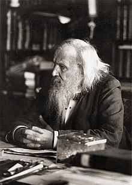

Dimitri
mendeleev
Twórca pierwszego Układu okresowego pierwiastków
W 1863 r. było 56 znanych pierwiastków, a nowy pierwiastek był odkrywany w tempie około jednego na rok. Inni naukowcy wcześniej zidentyfikowali okresowość pierwiastków. John Newlands opisał Prawo Oktaw, odnotowując ich okresowość według względnej masy atomowej w 1864 r., publikując je w 1865 r. Jego propozycja zidentyfikowała potencjał nowych pierwiastków, takich jak german. Koncepcja została skrytykowana, a jego innowacja nie została uznana przez Towarzystwo Chemiczne aż do 1887 roku. Inną osobą, która zaproponowała układ okresowy pierwiastków, był Lothar Meyer, który opublikował w 1864 roku artykuł opisujący 28 pierwiastków sklasyfikowanych według ich wartościowości, ale bez przewidywania nowych elementy. Po zostaniu nauczycielem w 1867 r. Mendelejew napisał Zasady chemii (ros. Основы химии, romanizowana: Osnovy chimii), które stały się ostatecznym podręcznikiem swoich czasów. Została wydana w dwóch tomach w latach 1868-1870, a Mendelejew napisał ją, przygotowując podręcznik do swojego kursu. To wtedy dokonał swojego najważniejszego odkrycia. Próbując sklasyfikować pierwiastki według ich właściwości chemicznych, zauważył wzorce, które skłoniły go do sformułowania swojego układu okresowego pierwiastków; twierdził, że wyobrażał sobie kompletny układ elementów we śnie:
Widziałem we śnie stół, na którym wszystkie elementy układały się zgodnie z wymaganiami. Przebudzony od razu zapisałem to na kartce, tylko w jednym miejscu korekta wydawała się później konieczna.
— „Mendelejew, cytowany przez Inostrantzewa”
Inne Wynalazki
Mendelejew wniósł inny ważny wkład w chemię. Rosyjski chemik i historyk nauki Lew Czugajew scharakteryzował go jako „genialnego chemika, pierwszorzędnego fizyka, płodnego badacza w dziedzinie hydrodynamiki, meteorologii, geologii, niektórych gałęzi technologii chemicznej (np. materiały wybuchowe, ropa naftowa i paliwa). ) oraz innych dyscyplin z pogranicza chemii i fizyki, wytrawny znawca przemysłu chemicznego i przemysłu w ogóle oraz oryginalny myśliciel w dziedzinie ekonomii.” Mendelejew był w 1869 jednym z założycieli Rosyjskiego Towarzystwa Chemicznego.
Zajmował się teorią i praktyką handlu protekcjonistycznego oraz rolnictwem.In an attempt at a chemical conception of the aether, he put forward a hypothesis that there existed two inert chemical elements of lesser atomic weight than hydrogen. Of these two proposed elements, he thought the lighter to be an all-penetrating, all-pervasive gas, and the slightly heavier one to be a proposed element, coronium.
Mit
Mit wódki. Bardzo popularna rosyjska opowieść przypisuje Mendelejewowi ustalenie 40% standardowej mocy wódki. Na przykład wódka Russian Standard reklamuje: „W 1894 r. Dmitrij Mendelejew, największy naukowiec w całej Rosji, otrzymał dekret ustanawiający cesarski standard jakości dla rosyjskiej wódki i narodził się „Rosyjski Standard”. najwyższa jakość rosyjskiej wódki zatwierdzona przez królewską komisję rządową pod przewodnictwem Mendelejewa w 1894 r.” W rzeczywistości norma 40% została już wprowadzona przez rząd rosyjski w 1843 roku, kiedy Mendelejew miał dziewięć lat. Wprawdzie Mendelejew w 1892 roku został kierownikiem Archiwum Miar w Sankt Petersburgu, a rok później przekształcił je w biuro rządowe, ale instytucja ta miała za zadanie ujednolicenie rosyjskich wag i przyrządów pomiarowych, a nie ustalenie jakości produkcji Standardy, Również rozprawa doktorska Mendelejewa z 1865 r. nosiła tytuł „Dyskurs o połączeniu alkoholu i wody”, ale omawiała tylko medyczne stężenie alkoholu powyżej 70% i nigdy nie napisał nic o wódce.
Lata Życia
Urodzony: 8 lutego 1834
Umarł: 2 lutego 1907 (w wieku 72)
Mendelejew w 1897 r.:
